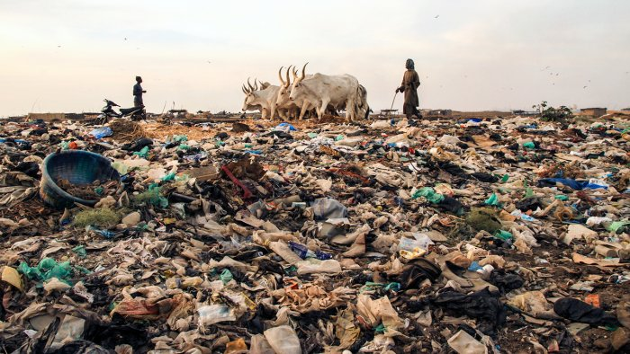
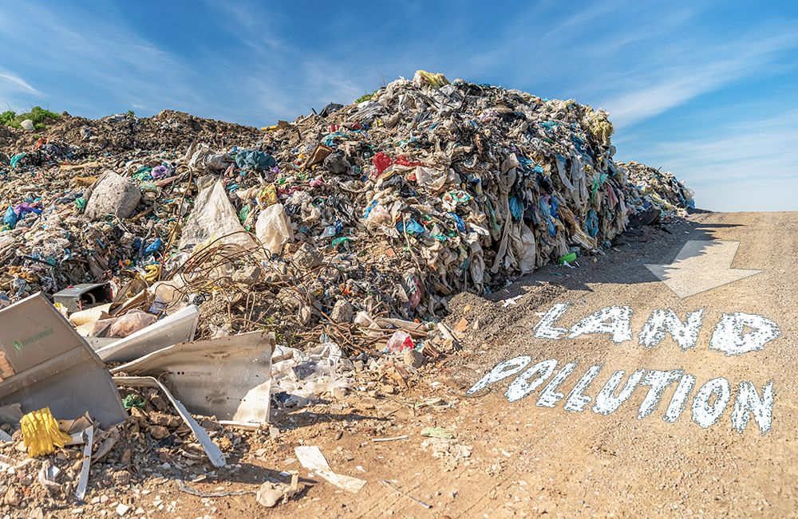

LAND POLLUTION

Many of the same pollutants that foul the water also harm the land. Mining sometimes leaves the soil contaminated with dangerous chemicals.
Pesticides and fertilizers from agricultural fields are blown by the wind. They can harm plants, animals, and sometimes people. Some fruits and vegetables absorb the pesticides that help them grow. When people consume the fruits and vegetables, the pesticides enter their bodies. Some pesticides can cause cancer and other diseases.
A pesticide called DDT (dichlorodiphenyltrichloroethane) was once commonly used to kill insects, especially mosquitoes. In many parts of the world, mosquitoes carry a disease called malaria, which kills a million people every year. Swiss chemist Paul Hermann Muller was awarded the Nobel Prize for his understanding of how DDT can control insects and other pests. DDT is responsible for reducing malaria in places such as Taiwan and Sri Lanka.
In 1962, American biologist Rachel Carson wrote a book called Silent Spring, which discussed the dangers of DDT. She argued that it could contribute to cancer in humans. She also explained how it was destroying bird eggs, which caused the number of bald eagles, brown pelicans, and ospreys to drop. In 1972, the United States banned the use of DDT. Many other countries also banned it. But DDT didn't disappear entirely. Today, many governments support the use of DDT because it remains the most effective way to combat malaria.
Trash is another form of land pollution. Around the world, paper, cans, glass jars, plastic products, and junked cars and appliances mar the landscape. Litter makes it difficult for plants and other producers in the food web to create nutrients. Animals can die if they mistakenly eat plastic.

Garbage often contains dangerous pollutants such as oils, chemicals, and ink. These pollutants can leech into the soil and harm plants, animals, and people.
Inefficient garbage collection systems contribute to land pollution. Often, the garbage is picked up and brought to a dump, or landfill. Garbage is buried in landfills. Sometimes, communities produce so much garbage that their landfills are filling up. They are running out of places to dump their trash.
A massive landfill near Quezon City, Philippines, was the site of a land pollution tragedy in 2000. Hundreds of people lived on the slopes of the Quezon City landfill. These people made their living from recycling and selling items found in the landfill. However, the landfill was not secure. Heavy rains caused a trash landslide, killing 218 people.
Sometimes, landfills are not completely sealed off from the land around them. Pollutants from the landfill leak into the earth in which they are buried. Plants that grow in the earth may be contaminated, and the herbivores that eat the plants also become contaminated. So do the predators that consume the herbivores. This process, where a chemical builds up in each level of the food web, is called bioaccumulation.
Pollutants leaked from landfills also leak into local groundwater supplies. There, the aquatic food web (from microscopic algae to fish to predators such as sharks or eagles) can suffer from bioaccumulation of toxic chemicals.
Some communities do not have adequate garbage collection systems, and trash lines the side of roads. In other places, garbage washes up on beaches. Kamilo Beach, in the U.S. state of Hawaii, is littered with plastic bags and bottles carried in by the tide. The trash is dangerous to ocean life and reduces economic activity in the area. Tourism is Hawai's largest industry. Polluted beaches discourage tourists from investing in the area's hotels, restaurants, and recreational activities.
Some cities incinerate, or burn, their garbage. Incinerating trash gets rid of it, but it can release dangerous heavy metals and chemicals into the air. So while trash incinerators can help with the problem of land pollution, they sometimes add to the problem of air pollution.